Japanese plugs and sockets
While standard Japanese plugs and sockets are more or less the same as the NEMA ones in use in North America, there are still substantial differences, both in their outlets and with other electrical items as well. As an example, most circuits aren't earthed, and thus the majority of sockets are of the 2-prong unearthed type.
It should be noted that Japan uses 100V supplies (with 200V split-phase, similar to US supplies, being common), at either 50 or 60 Hz depending on the geographical location (a unique feature). Whole-house RCDs are frequently used, likely due to the adoption of the TT earthing system.
Panasonic socket modules
One distinguishing feature of Japanese electrics compared to North American ones is the widespread use of modular sockets and light switches, which allows for a high level of flexibility. These are some of the modules that would be used in such a system: they would mount to a mounting frame, and a cover plate would go on top.
Notably, compared to modular items in use in Italy, this seems to be some sort of standard, which means devices from various brands should work together without problems. A lot of the socket modules shown here are twist-lock ones, which work with standard types of plug. An explanation of how they work is shown below.
Wiring is done on the back, though the wire connections are done with screwless terminals, similarly to more modern Schuko sockets - these work simply by pushing the wire in (solid-core only), which is then held firmly in place; to remove it, a screwdriver is used to push a small plastic piece on top of the terminals.
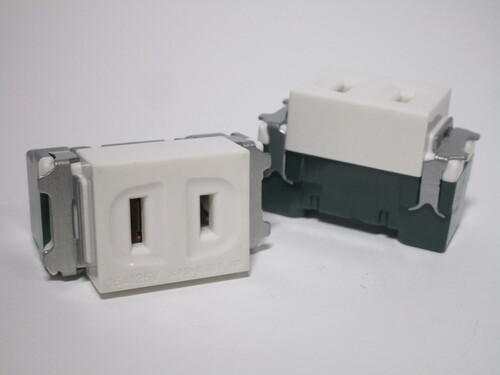 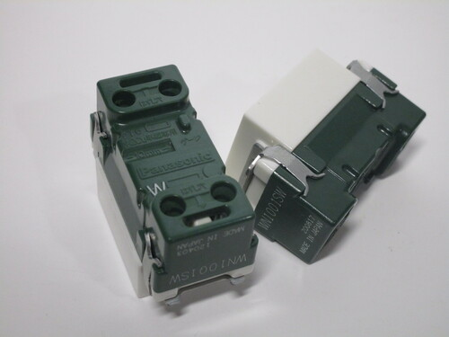 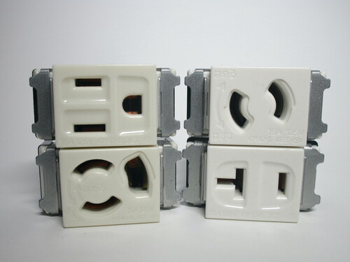{kind=link}
{kind=link}
{kind=link}
Twist-lock sockets
One particularly interesting style of socket sometimes used in Japan is this twist-lock one; these are fascinating as they don't require any sort of special plug, unlike with other designs of twist-lock sockets. Instead, they work using standard 2- or 3-prong plugs, which, after being inserted and twisted clockwise, are firmly held in place by holding onto the holes found on most American and Japanese plugs, and cannot be accidentally unplugged.
This seems to work fairly well, though one noticable flaw with it is that, at least with the models shown here, there isn't a way to enforce polarity on 2-prong polarised plugs. This means that it's easily possible to plug one in the wrong direction, swapping line and neutral.
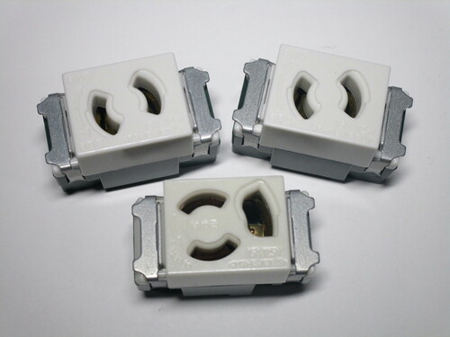 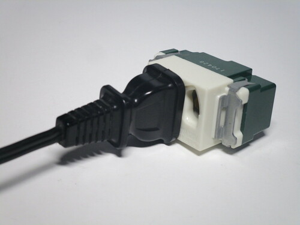 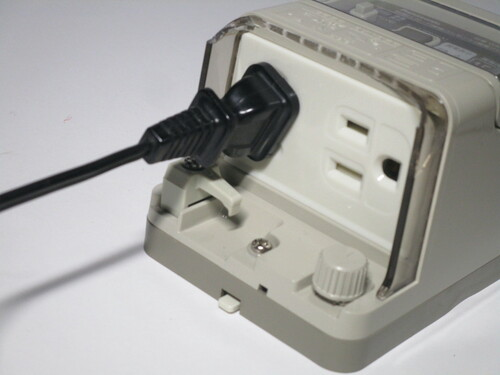{kind=link}
{kind=link}
{kind=link}
RCD power socket
This is a rainproof RCD-protected power socket, from Panasonic. It's meant to mount to a wall, with a rubber gasket on the outside to prevent any water from entering. It features two outlets on the bottom to connect to appliances, and controls for the RCD on the front, under a plastic flap.
The controls are quite simple: as with most RCDs, there's a small test button, and a larger reset button in case the device has tripped. There is also an indicator LED to view the status of the device. Notably, this RCD trips at 15mA - twice as sensitive as the 30mA ones in use in Europe, but not as much as the GFCIs in use in North America.
Interestingly enough, while this device is marked as being rain-proof, it only has the aforementioned rubber gasket on the back, but nothing on the front flap for the controls, and there isn't a cover for the sockets on the bottom either.
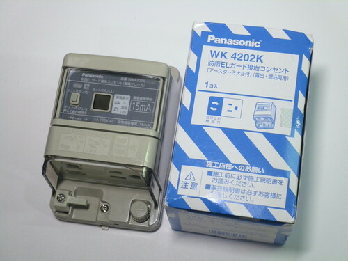 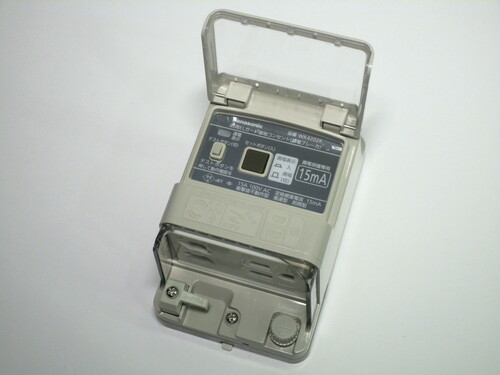 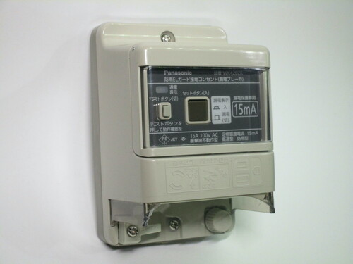{kind=link}
{kind=link}
{kind=link}
Two power sockets are present on the bottom: a standard 3-prong one, the same as the style used in the US, as well as a 2-prong twist-lock one. An earthing post is also present, as it's quite common for Japanese appliances to use a 2-prong plug with a separate earth lead; there's also a small plastic cord grip present, to prevent a device from becoming unplugged. The twist-lock socket functions similarly to the ones in the socket modules shown earlier: it works with standard plugs and locks them in place by using the holes on the pins of the plug.
Both of the sockets on this device have some sort of shutter mechanism; however, compared to normal styles of safety shutters, these ones open independently of one another, allowing the user to stick an object inside the socket, and thus aren't a particularly effective or useful form of protection.
Wiring is, as usual, done on the back; terminals for line, neutral (W), and earth are present, as well as two terminals (covered up by a label) which seem to be for some sort of alarm device - perhaps to indicate when the RCD has tripped. As with the modules shown earlier, this device also uses screwless terminal connections.
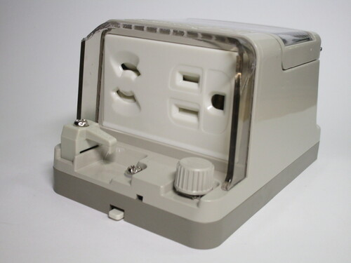 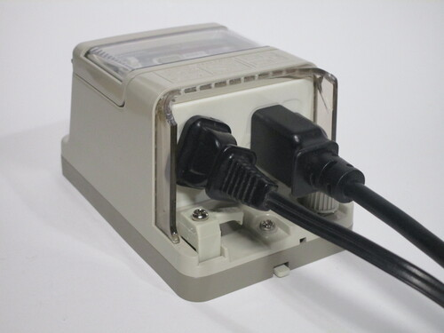 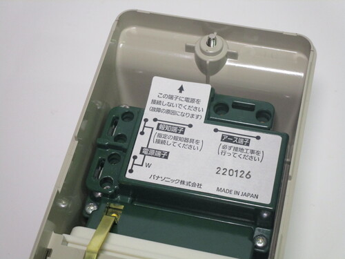{kind=link}
{kind=link}
{kind=link}
Earthed plug from Panasonic
Rating: 15A 125V
This is an earthed (3-prong) plug, branded as National and made by Matsushita Electric Works Ltd., in Japan. It's the same type of plug as the American NEMA 5-15P, though plugs of this type aren't the only way to connect an earthed appliance: traditionally, 2-prong ones with a separate earth lead have been more common. Because of this, more modern sockets (like the RCD one shown earlier) are able to use either type depending on the plug that's connected.
One notable feature of this plug is the gold-coloured live pin, presumably to avoid people from miswiring it. The neutral and earth pins are both coloured silver, though the screw for the earth connection is coloured green.
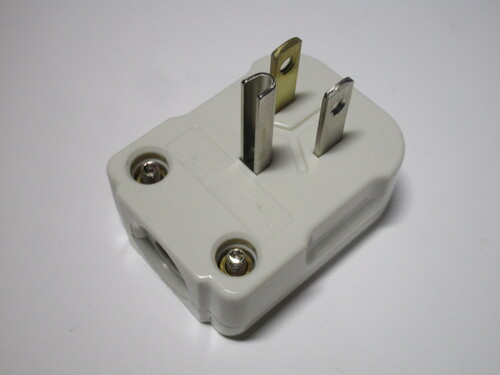 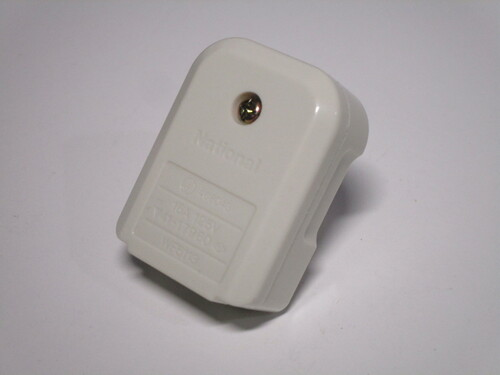 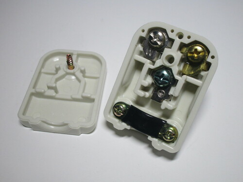{kind=link}
{kind=link}
{kind=link}